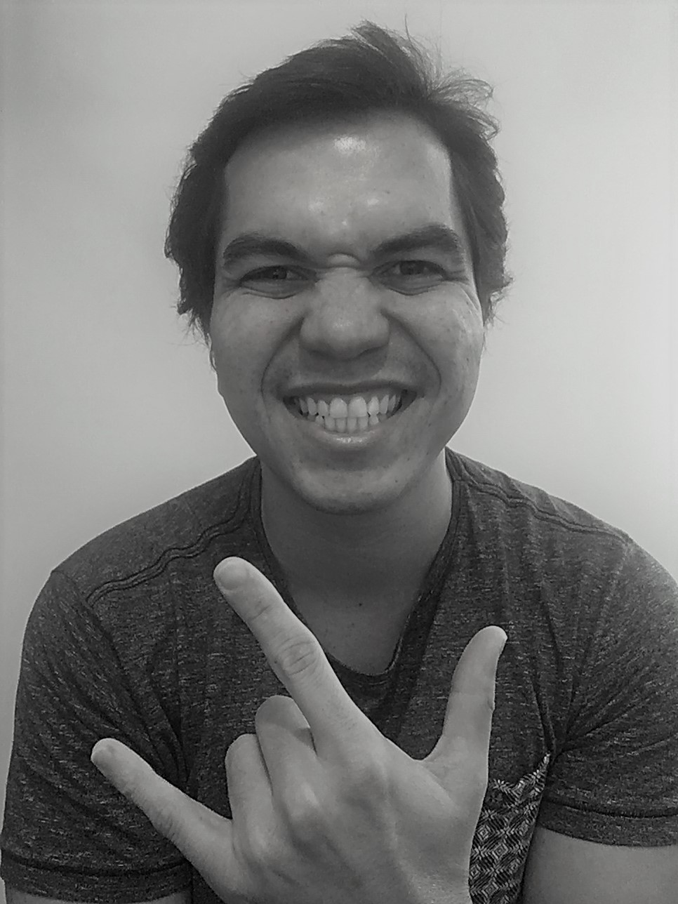

Meu nome é Bruno Virgilio de Lima, trabalho na TI desde 2008, sempre na Gestão de Clientes e Gestão de Projetos. Iniciei em uma empresa de revenda de hardware, nessa época eu também realizava manutenção em PCs. Em 2011 comecei a prestar serviços para a Petrobras, fazendo a gestão dos clientes, que são as áreas de negócios da empresa, viabilizando que suas necessidades de TIC fossem atendidas, em 2013 incorporei a gestão de projetos no meu trabalho, dessa forma tenho participado das fases de inciação, planejamento, monitoramento e encerramento de projetos de software e telecomunicações.
Em 2020, ingressei na faculdade de Análise de Sistemas, já pretendida cursar essa graduação há 1 ano, pois sabia que iria me identificar, hoje vejo que realmente eu tinha razão. Estudo diariamente, pesquiso conteúdos complementares a faculdade, já tenho alguns projetos concluídos e outros em andamento. Estou muito confiante no potencial de crescimento, que o desenvolvimento de software e toda engenharia que envolve esse trabalho, podem me proporcionar.